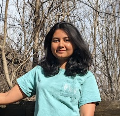

SHAMBHAVI KUTHE
MS, Computer Engineering
Virginia Tech, Blacksburg
Virginia, USA
About Me
I am a Masters student in Computer Engineering at Virginia Tech. My interests include Computer Systems, Embedded systems and Robotics.
Currently I'm working as Graduate Research Assistant in the FoRTE Research Group of Virginia Tech.
Previously I have worked as a Systems Design Engineer in R&D Embedded Systems group of Schneider Electric India Pvt. Ltd.
During my undergrad, I was a part of the Society of Robotics and Automation, where I worked on multiple Robotics and Embedded Systems.